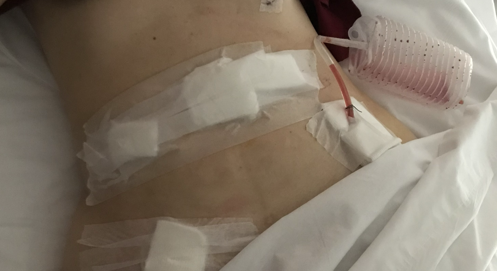

Todas las citas que aparecen en esta presentación provienen de entradas de un diario personal que mantuve durante el desarrollo del proyecto.
Entre la lingüística y la cicatriz
Reflexiones metodológicas sobre el análisis del dolor vivido y sus trayectorias hacia la aplicación tecnológica
Explorar desde el cuerpo y la palabra
“Salí del quirófano con más cicatrices que respuestas. Entonces supe que, si quería entender lo que me estaba pasando, tenía que ponerle palabras. Y si no existían, tenía que buscarlas.”
¿Quién soy?
Soy lingüista, paciente, desarrolladora. Esta presentación nace de una necesidad doble: decir y comprender el dolor, transformarlo en conocimiento y en herramienta.
Motivación
Proyecto anclado en mi experiencia y en una comunidad global de práctica.
"El lenguaje de la endometriosis se volvió mi idioma universal por defecto, mi destino lingüístico a largo plazo."

Representación simbólica: el lenguaje como forma de habitar el cuerpo.
El contexto del dolor: La Endometriosis
La endometriosis es una enfermedad crónica, compleja y multifacética.
La experiencia del dolor es central en su diagnóstico y tratamiento.
“El dolor no es solo un síntoma, es una experiencia vivida que necesita ser entendida y comunicada.”
Objetivo del Proyecto
- Captar la experiencia vivida en sus propias palabras
- Identificar metáforas que estructuran la conceptualización del dolor
- Tender puentes entre pacientes y lenguaje clínico
- Desarrollar herramientas útiles (académicas, clínicas y tecnológicas)
Metodología y Resultados
Metodología: entrevistas, focus groups, corpus online, ACD, CMT, SFL, IPA (bilingüe y transcultural).
- Lenguaje del dolor como violencia, animalidad, fuego, maquinaria, despersonalización
- Visualización del dolor: color, textura, materiales
- El lenguaje construye y transforma el dolor

El cuerpo como método
Este proyecto nació desde mi cuerpo, mis cirugías, mi silencio acumulado.
Dilemas éticos y estrategias de contención
- ¿Cómo corregir sin invalidar? ¿Cómo sostener sin disolverme?
- Preguntas que guiaban sin imponer.
- Derivaciones éticas (Endometriosis UK, apoyo emocional).
- La entrevista como acto de cuidado y validación.
Tensiones metodológicas: objeciones y respuestas
- ¿Demasiado centrado en mí? → Enmarca, no eclipsa.
- ¿Demasiado emocional? → La emoción es un dato, no una debilidad.
- ¿Influencia en las participantes? → Lo reconozco, no lo borro.
- ¿Y el rigor? → Validación externa, reflexividad constante.
“Ser investigadora-paciente no fue un conflicto a resolver, sino un punto de partida para construir conocimiento encarnado, crítico y útil.”
El dilema del “Professional Stranger” y el “Observer’s Paradox”
- Marco teórico: Agar, Labov, autoetnografía, etic/emic.
- Disclosure como estrategia metodológica: abrir el juego para ganar confianza, sabiendo que no hay vuelta atrás.
- Sisterhood como recurso y riesgo: confianza, pero también sobreidentificación.
Lo que no soy (y lo que sí soy)
"Investigar desde adentro me obligó a recordar, todo el tiempo, lo que no soy."
- No soy médica: aunque tenga información, no puedo corregir diagnósticos.
- No soy psicóloga: aunque escuche con empatía, no puedo intervenir terapéuticamente.
- No soy activista o portavoz: aunque muchas me veían así, no era mi rol hablar “por” ellas.
- No soy amiga: aunque el tono se acercara a una charla íntima, yo tenía un rol específico.
- Sí soy una investigadora con formación ética y sensibilidad situada.
- Sí soy una lingüista que sabe analizar el lenguaje, pero no siempre puede contener la emoción que lo rodea.
- Sí soy una persona con endometriosis que eligió usar esa cicatriz como lente metodológica, no como herramienta terapéutica.
“Mi tarea no era sanar, ni contener, ni corregir. Mi tarea era registrar, interpretar y devolver algo con sentido, sin hacer daño.”
Después del dolor y la escritura: Pain Descriptor Auto-Tagger
Herramienta emergente: Pain Descriptor Auto-Tagger
- Clasificación automática de metáforas y dimensiones experienciales
- Basado en corpus reales y desarrollado por una investigadora-paciente
- Aplicación clínica y comunicativa

“Porque lo que no se puede nombrar, no se puede tratar.”
Contribuciones y Cierre
- Innovación metodológica desde dentro
- Vinculación entre lingüística, salud y tecnología
- Propuesta ética y empática
Lo que me dejó:
- Una cicatriz visible y una comunidad invisible
- Un mapa para mí y para otras
- Lenguaje que puede sanar
“A veces, nombrar el dolor no lo alivia del todo. Pero lo devuelve al mundo, y eso ya es una forma de libertad.”
Estoy abierta a colaboraciones interdisciplinarias, clínicas y tecnológicas. Si este trabajo te resonó, escribime: stella.bullo.pro@gmail.com
Referencias
- Bullo, S. (2018). Exploring disempowerment in women’s accounts of endometriosis experiences. Discourse & Communication, 12(2), 211–228. https://doi.org/10.1177/1750481318761254
- Bullo, S. (2020). 'I feel like I’m being stabbed by a thousand tiny men': Metaphor and embodiment in endometriosis forums. Health, 24(6), 667–685. https://doi.org/10.1177/1363459319847801
- Bullo, S. (2021). The construction of agency in Spanish and English narratives of endometriosis. Communication & Medicine, 18(1), 59–74. https://doi.org/10.1558/cam.18606
- Bullo, S. (2021). Agency and representation in bilingual narratives of endometriosis. British Journal of Health Psychology, 26(4), 1023–1040. https://doi.org/10.1111/bjhp.12512
- Bullo, S., & Pascual, M. (2024). Visual reconstructions of endometriosis pain: Metaphor, identity and multimodal expression. British Journal of Health Psychology.
- Bullo, S. (2021). Addressing challenges in endometriosis pain communication. Frontiers in Global Women’s Health, 2, 764693. https://doi.org/10.3389/fgwh.2021.764693
- Labov, W. (1972). Sociolinguistic patterns. University of Pennsylvania Press.
- Spradley, J. P. (1980). Participant observation. Holt, Rinehart and Winston.
- Reid, A. (2023). 'I get it, I’m sick too': An autoethnographic study of one researcher/practitioner/patient living with Lyme disease. Qualitative Health Research. https://pubmed.ncbi.nlm.nih.gov/37843470/